Note
Click here to download the full example code
Apply a transform or inverse transform on your polynomial chaos¶
Introduction¶
In this document we present the transformation involved in the creation of a polynomial chaos. Indeed, the polynomial chaos expansion is never directly applied to the input random variable of a model  . Instead, the expansion is expressed based on the associated standard random variable. In this example, we show how to transform a Log-Normal random variable into its standardized variable with the class DistributionTransformation.
. Instead, the expansion is expressed based on the associated standard random variable. In this example, we show how to transform a Log-Normal random variable into its standardized variable with the class DistributionTransformation.
Probabilistic transform¶
Let  be the probabilistic transform which maps the physical random variable
be the probabilistic transform which maps the physical random variable  to the standardized random variable 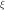:
to the standardized random variable 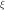:
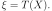
Let  be the Cumulative Distribution Function (CDF) associated with the random variable and let 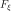 be the CDF associated with the random variable . Therefore, is the CDF associated with the orthogonal polynomials involved in the polynomial chaos expansion. In this case, the transform is:
be the Cumulative Distribution Function (CDF) associated with the random variable and let 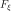 be the CDF associated with the random variable . Therefore, is the CDF associated with the orthogonal polynomials involved in the polynomial chaos expansion. In this case, the transform is:
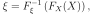
for any 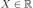.
Example¶
We want to use the Hermite orthogonal polynomials to expand a Log-Normal random variable:
let
follow the Log-Normal distribution with the following parameters: Lognormal(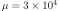, 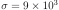),let 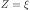 follow the Normal distribution with zero mean and unit standard deviation (the letter
 is often used for standard Normal random variables).
is often used for standard Normal random variables).
Let 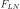 be the CDF of the Log-Normal distribution associated with and let  be the CDF of the standard Normal distribution.
be the CDF of the standard Normal distribution.
Therefore,
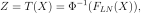
for any .
import openturns as ot
In the first step, we define the LogNormal distribution. Its parameters - mean and standard deviation - have been selected so that there is no ambiguity with the standard Normal distribution. This parametrization can be used thanks to the ParametrizedDistribution class.
Xparam = ot.LogNormalMuSigma(3.0e4, 9.0e3, 15.0e3) # in N
X = ot.ParametrizedDistribution(Xparam)
Then we generate a 5-point sample.
sampleX = X.getSample(5)
sampleX
In the second step, we define the random variable with standard Normal distribution.
Z = ot.Normal()
We also generate a sample from it.
sampleZ = Z.getSample(5)
sampleZ
In the third step, we create the transform T which maps X to Z.
T = ot.DistributionTransformation(X, Z)
We apply this transform on the sample generated from X.
T(sampleX)
The inverse transform maps into .
Tinverse = T.inverse()
Tinverse(sampleZ)
Conclusion¶
The DistributionTransformation class is rarely used directly because the polynomial chaos classes perform the transformation automatically. However, understanding how this transform is done clarifies why the coefficients of the chaos expansion cannot be related to the input random variable : the expansion is based on the standard variables . Hence, the absolute values of the corresponding coefficients have no straightforward interpretation, even though squaring them yields the part of the global variance associated with each coefficient.
Total running time of the script: ( 0 minutes 0.005 seconds)